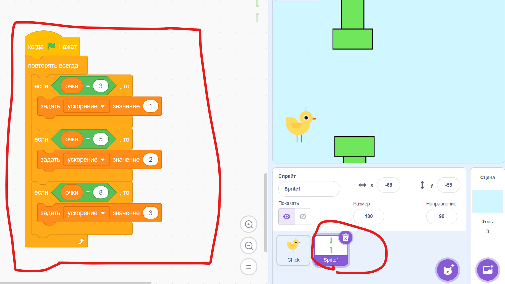
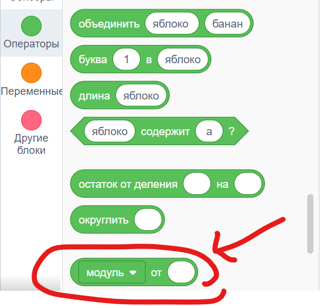

Сделай, чтобы при нажатии и удерживании стрелки вниз Птичка быстрее падала вниз. Например, можно использовать скорость, равную 3 (трём).
Сделай нулевое состояние на нажатие какой-нибудь клавиши, например цифры 1.
То есть, при нажатии клавиши 1 Птичка и Трубы становятся в исходное положение; плюс можно использовать блок [стоп все] из секции Управление, чтобы полностью остановить игру.
Сделай, чтобы когда Птичка касалась Труб, в твоей игры появлялось некое состояние проигрыша: например Птичка меняет костюм на тот, где она пикирует вниз, и быстро-быстро падает вниз. Доп. задание: ещё сделай так, чтобы, когда происходил проигрыш, игра останавливалась – используй блок [стоп все] из секции Управление.
* Сделай переменную с очками, которые прибавляются на 1 каждый раз, когда ты успешно пролетел между Трубами.
*Сделай ускорение для Труб.
Например, спустя 3 заработанных очка ускорение равно 1, спустя 5 - 2 и так далее.
Подсказка, как можно сделать эту систему с рубежами очков и соответствующего ускорения:

Внимание: здесь в этом скрипте сверху есть ошибка. Будь внимателен при тестировании своей программы.
Также тебе понадобится помощь такого блока из секции Операторы:

{kind=link}
{kind=link}